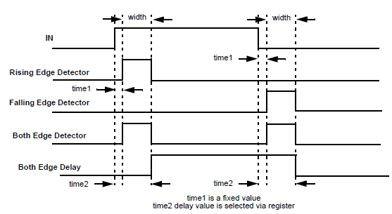
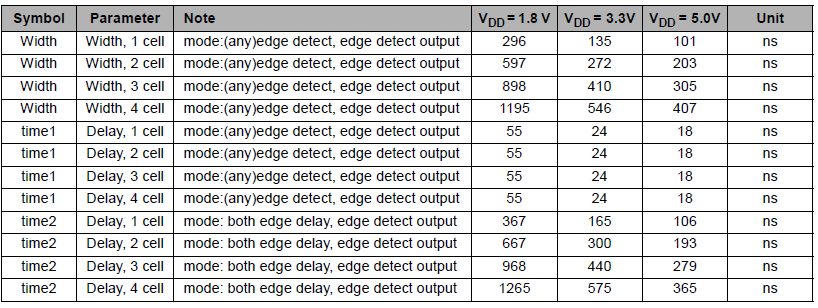

The Programmable Time Delay (PDLY) is a macrocell that can be used as an edge detector or a both edge filter. The four possible modes are: rising edge detection, falling edge detection, both edge detection and both edge delay. In Edge detection mode, the PDLY generates a pulse of selectable width when the edge is detected. In Delay mode, the PDLY delays the input to the output by a selectable length.
Select one of the four modes:
• Rising/Falling/Both Edge detector: The output of the PDLY is typically LOW. The PDLY generates a pulse of selectable width when the edge is detected
• Both Edge Delay: The output of the PDLY follows the input. The PDLY delays the input to the output by a selectable length.

Figure 1. Edge Detect Mode
The selectable width/length of the PDLY ranging from 1 to 4 cell widths. For edge detection, this is the width of the generated pulse. For delay mode, this is the length of the input to output delay. See the tables for cell length.
Refer to Figure 1 and Table 1. Delay(ns) is time1. Pulse width(ns) is width.

Table 1. Table of PDLY Expected Delays and Widths.